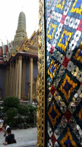
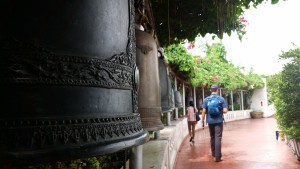
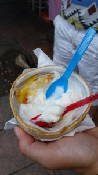

{kind=link}
We made it! After a 9 hour layover in the dead of night and many long hours on two separate flights we arrived in Bangkok on Thursday morning. Getting to the hostel was an adventure on its own. The traffic within the city is absolutely wild. I had to bite my tongue as we sat in a taxi and wove around cars, motorcycles, and ‘tuk tuks’ which is like a carriage, although powered with a small motor. We sped into oncoming traffic many times. Although, crazy enough, there are few accidents here. Not a car has a single scratch on it that I have seen. I think LA folks have a bit to learn about city driving.
We have crammed so much into the three days we have spent here, so I will go through a few of the notable activities.
We visited The Grand Palace, which is a series of Buddhist temples and buildings that the king and various political figures still use today. The aesthetic detail of the temples was unreal, both inside and out. Figurines, mosaics, timelines painted on the walls, and shrines were all over the grounds and incorporated within the architecture. Brilliant colors surrounded us as we learned more about the religion and politics of this country
.
After this we were hungry so we tried to find an authentic place to eat lunch. We spied a kitchen on the bottom story of a massive building. There were many people in uniforms milling around the building, but we didn’t think anything of it. We walked down and tried to find a menu, or even prepared dishes in the kitchen (which is never in a different room than the dining area) we could point at and order from. The chef looked at us funny and started laughing as we looked around and tried to figure out how to communicate what we wanted. That is about the time we noticed that people were talking to each other through a steel fence. It looked like we had found the Bangkok jail. Everyone was laughing at this point, including us so we waved goodbye and found a normal restaurant to eat at, one that served to those not incarcerated.

Our Saturday evening was a little unconventional; we decided to participate in a guided meditation led by a Buddhist monk. He spoke about Buddhism, the body and mind (body and mind, body and mind), and the world as he saw it. He then showed us how to practice meditation while sitting and standing. We meditated for an hour, which was a lot harder than I previously thought. I fell asleep a couple of times while sitting and meditating…oops. Each time the half hour began, the monk would leave the room, then return when it was time to switch methods. At the end of the time, he revealed to us that he had been watching us the entire time through a camera mounted at the front of the class. He laughed, and pointed out a few people who had given up on the pose half-way through. All in all it was a great experience and has me interested in exercising my mind this way in the future.
We also took a Thai cooking course which has been my favorite activity by far. We made 8 separate dishes, including a hummus made of pumpkin that was delicious! In between the 7th dish (papaya salad) and the dessert (mango sticky rice) we learned a traditional Thai style of dancing. Hopefully we can go back to the states and recreate the awesome dishes we enjoyed. My favorite is an Indian inspired dish called Massaman Curry. The runner up was the Pad Thai, which had much more complex flavors than what is served in the west. (Papaya salad in the photo)
As I am writing this, we are sitting in the hostel lobby listening to the rain falling among the hum of different languages being spoken by people from all different places. Lucky for us 95% of the folks we have met speak English, although I feel pretty lame that this is the only language I can speak. Many are traveling by themselves, most have begun their adventures in Bangkok, and, all have been some of the nicest people I have ever spoken with. I could definitely get used to this.
Until next time. Thanks for reading!
Danielle

Yum
Great to see you guys made it! I’m looking forward to reading about your adventures in Southeast Asia! Have fun guys! Be safe!
-Manny
AWESOME!!! keep it coming : ))
Thank you for taking us along on your adventure. It all sounds wonderful! Miss you and love you so much! Mom
Wonderful stories and photos 🙂 So when you get back we want to have a party so you can cook those dishes for us… and teach us the dances you learned! Stay clear of the jails- ha ha 🙂
Looks good and looks like you’ll be able to fit A LOT into 6 months. Glad you made it there and I hope there’s video of Danielle “staying calm” during the car ride. Can you post photos to gallery so we can see full size? Love you both – keep havin’ fun
Yeah, eventually. It takes way longer with bad internet
You guys are awesome. Your cooking picture is hilarious, you look like you’re on a real cooking show.
Loving the pictures!! And how appropriate that you guys have already jumped in to Thai dancing! I’m sure you’ll be pros in no time.
Pumpkin hummus sounds so interesting! What an awesome find on the cooking class. Keep sharing the food pictures, Bangkok looks delicious!! xoxoxo
PS, Nice update on the trail necessity ;P
We miss you.. !!!!!!
Ax
🙂
More!
The way you two share about your adventures is so beautifully written, it brings it all to life.
I am so happy for you both!